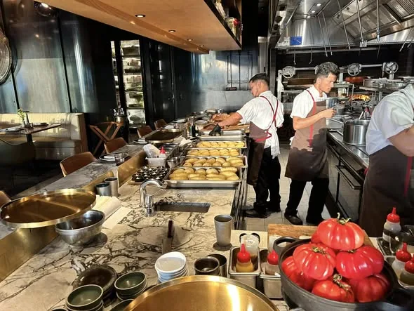

← Back to archive
October 2024
Darling Harbour

A Sydney long weekend built around the waterfront, good food and one very good sunset. Darling Harbour was less about rushing around and more about enjoying the city at an easy pace.
Back to the archive →